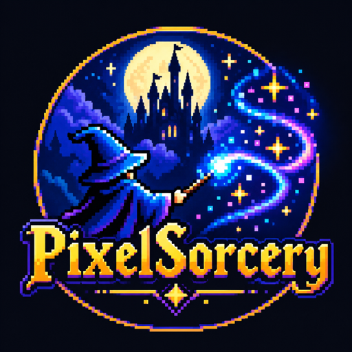

PixelSorcery
Sega Mega Drive / Genesis games rebuilt as native programs: decompiled, recompiled to C, and run on their own video, sound and input code, with no emulator in the loop.
Mac: macOS 14+ on Apple silicon, unsigned (System Settings → Privacy & Security → Open Anyway) ·
Linux: Debian / Ubuntu, sudo apt install ./pixelsorcery_0.1.0_all.deb, then pixelsorcery · no ROMs included
How it works
- Point it at your own dumps. PixelSorcery recognises each game by its checksum.
- Recompile. The 68000 game code and the Z80 sound driver are translated to C.
- Build. That C is compiled with the native runtime into a program for your computer.
- Play. Widescreen, instant save states, controller mapping and a settings menu come with it.
Checked against the original
Game coverage
Share of each game's code that has run in a replay verified against the original (31 October 2026). Reachable counts the code the game can actually run: functions that ran, plus everything their code calls or jumps to. All code also counts leftover routines nothing calls. Code that hasn't run yet still works: it falls back to the built-in 68000 interpreter, so lower coverage costs speed, not correctness.
| Game | Reachable code verified | All code | Mac / Linux app |
|---|---|---|---|
| Castle of Illusion | 87.4% | 51.2% | yes |
| QuackShot (REV00) | 87.0% | 52.1% | yes |
| QuackShot (REV01) | 86.5% | 45.9% | yes |
| Sonic the Hedgehog 2 | 79.9% | 60.9% | yes |
| World of Illusion (USA) | 77.9% | 27.4% | yes |
| Sonic the Hedgehog | 76.6% | 59.3% | yes |
| World of Illusion (Europe) | 75.6% | 29.1% | yes |
| Knuckles in Sonic 2 | 72.3% | 52.4% | yes |
| Sonic 3 & Knuckles | 70.3% | 35.4% | yes |
| Sonic & Knuckles | 67.7% | 35.7% | yes |
| Sonic the Hedgehog 3 | 62.1% | 31.3% | yes |
| Knuckles in Sonic 1 (our own) | 51.7% | 39.2% | yes |
| Sonic CD (Mega CD) | runs compiled, on the emulator core | not yet | |
Native, no emulation
No game included
PixelSorcery ships no ROMs and no code or data made from them. Every game is built on the player's machine, from a dump of a cartridge they own. Free for non-commercial use (PolyForm Noncommercial).